I want to use my portfolio to share some of the analytic work I did for my Master’s thesis. However, I need to keep my data private. My goal for this piece is to simulate a dataset that resembles my thesis data. I plan to use this simulated dataset in future portfolio pieces.
My original dataset contained youth-reported measures of parenting practices, civic engagement, and demographic information collected over three waves of a longitudinal study (labeled here as Times 1-3). Participants made up 11 different cultural/geographic groups, which were represented by effect-coded predictors in my final regression models. There was quite a bit of missing data across waves, so to simplify my simulation, I will use the most restricted subsample I had (668 participants).
Specific core variables include:
Recruitment groups include:
A simulated dataset containing all variables necessary for the analyses I completed for my thesis. (I obtained all parameter values by running descriptive and correlational analyses with the original dataset in SPSS.)
The simulation worked well for recreating my data! The biggest challenge was figuring out how to model (1) group differences in the average levels of the core variables and (2) correlations among the core variables at the same time. I ended up simulating the variables based on their correlations with each other first, and then adding “rnorm” terms by group to reflect group differences. This allowed me to model the main effects of the grouping variable on civic engagement. However, I did not model any interactions between group membership and the parenting variables. To further develop my simulation skills, I plan to simulate data with two-way interactions in a future portfolio piece!
library(tidyverse)
library(ggplot2)
library(MASS)set.seed(123)
df_civicengagement <- data.frame(
id = 1:668,
age = rnorm(668, mean = 15.61, sd = .898)
)set.seed(123)
df_civicengagement$IDN <- rep(c("Italy-Naples", "Italy-Rome", "Kenya", "Philippines", "Thailand", "Sweden", "US-AA", "US-EA", "US-H", "Colombia", "Jordan"),
times = c(76, 84, 41, 67, 50, 33, 49, 66, 39, 74, 89),
length.out = 668
)df_civicengagement <- df_civicengagement %>%
mutate(Naples = case_when(
IDN == "Italy-Naples" ~ 1,
IDN == "US-EA" ~ -1,
TRUE ~ 0
))
df_civicengagement <- df_civicengagement %>%
mutate(Rome = case_when(
IDN == "Italy-Rome" ~ 1,
IDN == "US-EA" ~ -1,
TRUE ~ 0
))
df_civicengagement <- df_civicengagement %>%
mutate(Kenya = case_when(
IDN == "Kenya" ~ 1,
IDN == "US-EA" ~ -1,
TRUE ~ 0
))
df_civicengagement <- df_civicengagement %>%
mutate(Philippines = case_when(
IDN == "Philippines" ~ 1,
IDN == "US-EA" ~ -1,
TRUE ~ 0
))
df_civicengagement <- df_civicengagement %>%
mutate(Thailand = case_when(
IDN == "Thailand" ~ 1,
IDN == "US-EA" ~ -1,
TRUE ~ 0
))
df_civicengagement <- df_civicengagement %>%
mutate(Sweden = case_when(
IDN == "Sweden" ~ 1,
IDN == "US-EA" ~ -1,
TRUE ~ 0
))
df_civicengagement <- df_civicengagement %>%
mutate(US_AA = case_when(
IDN == "US-AA" ~ 1,
IDN == "US-EA" ~ -1,
TRUE ~ 0
))
df_civicengagement <- df_civicengagement %>%
mutate(US_H = case_when(
IDN == "US-H" ~ 1,
IDN == "US-EA" ~ -1,
TRUE ~ 0
))
df_civicengagement <- df_civicengagement %>%
mutate(Colombia = case_when(
IDN == "Colombia" ~ 1,
IDN == "US-EA" ~ -1,
TRUE ~ 0
))
df_civicengagement <- df_civicengagement %>%
mutate(Jordan = case_when(
IDN == "Jordan" ~ 1,
IDN == "US-EA" ~ -1,
TRUE ~ 0
))I didn’t end up using these effect-coded variables further, but it was good practice to make them!
set.seed(123)
df_civicengagement$male <- rep(c("not male", "male"),
times = c(354, 314),
length.out = 668
)df_civicengagement$max_parental_ed <- rnorm(668, mean = 13.91, sd = 4.21)set.seed(123)
n_participants <- 668
var_names <- c("JDM", "IDM", "MatWarmth", "PatWarmth", "CE_2", "CE_3")
mean_vars <- c(.96, .26, 3.46, 3.26, 2.04, 1.81)
sd_vars <- c(.40, .21, .56, .74, .86, .80)
cor_matrix_parenting_CE <- matrix(
c(
1.0000, -.802, .129, .172, .086, .103,
-.802, 1.0000, -.148, -.197, -.129, -.102,
.129, -.148, 1.0000, .551, .056, -.002,
.172, -.197, .551, 1.0000, .046, .044,
.086, -.129, .056, .046, 1.0000, .521,
.103, -.102, -.002, .044, .521, 1.000
),
nrow = 6, ncol = 6, byrow = TRUE,
dimnames = list(
c("JDM", "IDM", "MatWarmth", "PatWarmth", "CE_2", "CE_3"),
c("JDM", "IDM", "MatWarmth", "PatWarmth", "CE_2", "CE_3")
)
)
cov_matrix_parenting_CE <- cor_matrix_parenting_CE * (sd_vars %*% t(sd_vars))
parenting_CE_data <- mvrnorm(n = 668, mu = mean_vars, Sigma = cov_matrix_parenting_CE)
df_civicengagement <- cbind(df_civicengagement, parenting_CE_data)Great! Now I have a dataframe that includes simulated values for all of my main variables of interest. Let’s visualize it:
df_civicengagement %>%
ggplot(aes(x = age)) +
geom_histogram(binwidth=.3, fill = "navy") +
labs(x = 'Age',
y = 'Count') +
theme(legend.position = "none")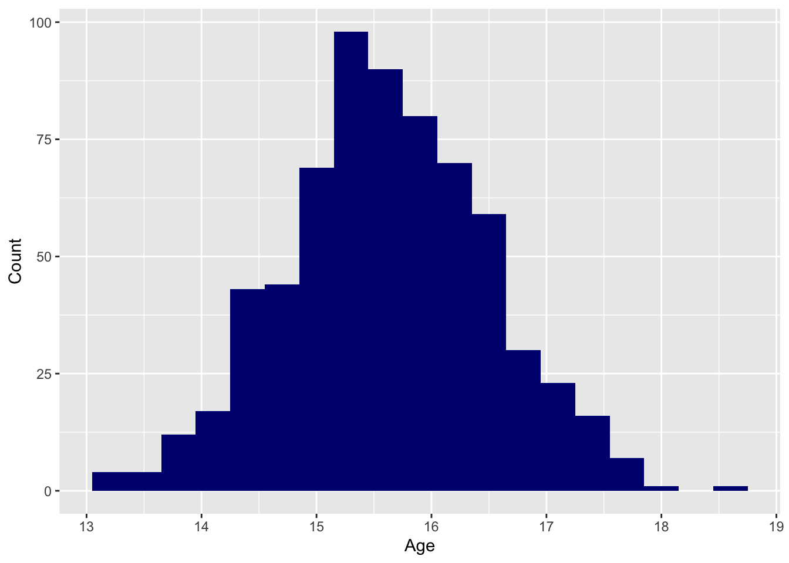
df_civicengagement %>%
ggplot(aes(x = male, fill = male)) +
geom_bar() +
labs(x = 'Gender',
y = 'Count') +
theme(legend.position = "none") +
coord_cartesian(ylim = c(200, 400)) +
scale_fill_viridis_d()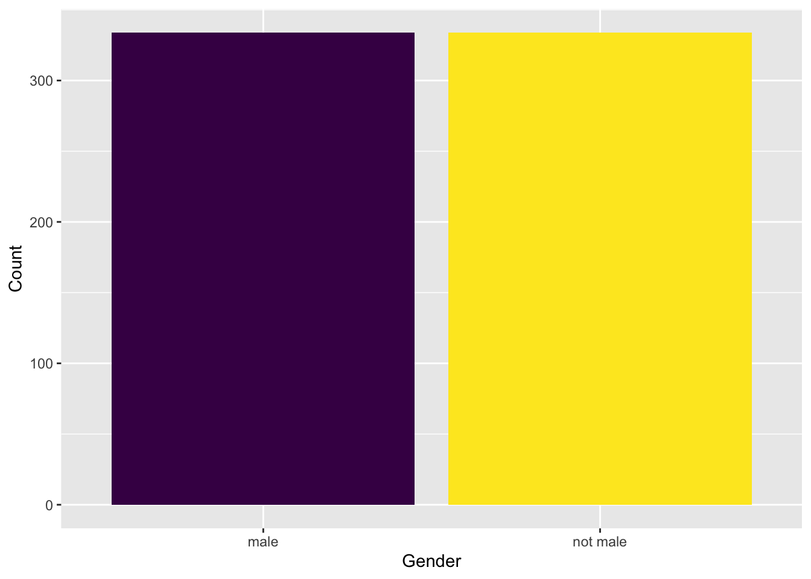
df_civicengagement %>%
ggplot(aes(x = max_parental_ed)) +
geom_histogram(binwidth=.7, fill = "navy") +
labs(x = 'Maximum Parental Education',
y = 'Count') +
theme(legend.position = "none")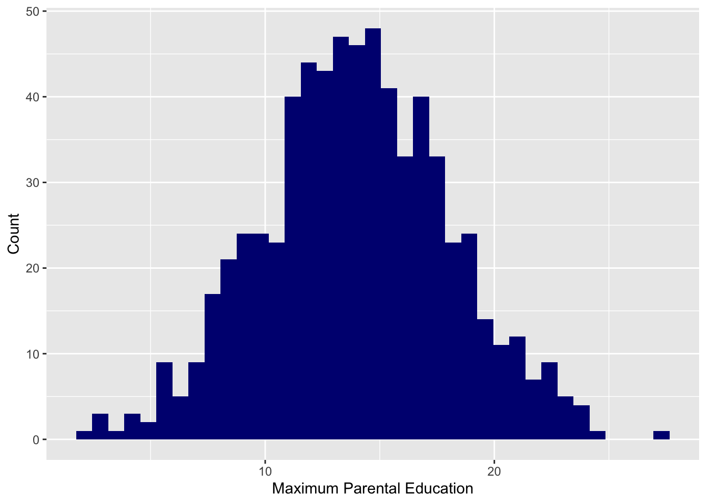
df_civicengagement %>%
ggplot(aes(x = IDN, fill = IDN)) +
geom_bar() +
labs(x = 'Recruitment Group',
y = 'Count') +
theme(legend.position = "none") +
coord_flip() +
scale_fill_viridis_d()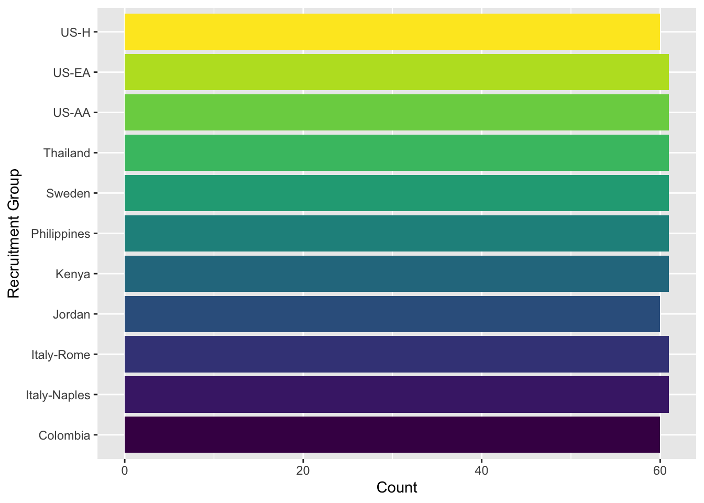
Based on my bar graphs, I see that the simulations for my categorical variables did not run as intended. I wanted to set specific numbers for each group/level, but I see that the groups/levels were simulated to be about equal. Here are my second attempts at simulating gender and recruitment group membership according to my data:
set.seed(123)
df_civicengagement$male <- rep(c("not male", "male"),
times = c(354, 314))
df_civicengagement %>%
ggplot(aes(x = male, fill = male)) +
geom_bar() +
labs(x = 'Gender',
y = 'Count') +
theme(legend.position = "none") +
scale_fill_viridis_d()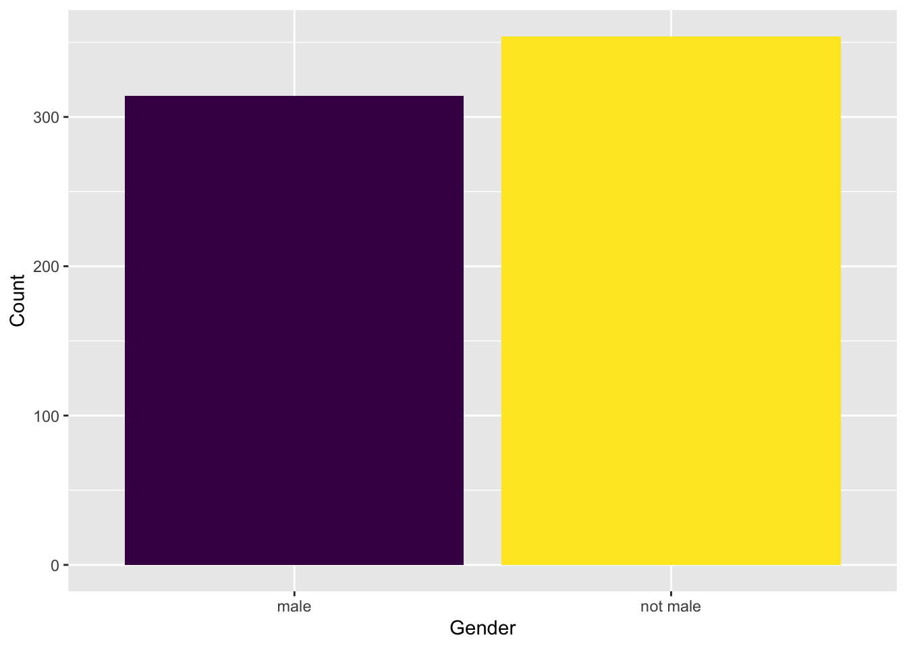
set.seed(123)
df_civicengagement$IDN <- rep(c("Italy-Naples", "Italy-Rome", "Kenya", "Philippines", "Thailand", "Sweden", "US-AA", "US-EA", "US-H", "Colombia", "Jordan"),times = c(76, 84, 41, 67, 50, 33, 49, 66, 39, 74, 89))
df_civicengagement %>%
ggplot(aes(x = IDN, fill = IDN)) +
geom_bar() +
labs(x = 'Recruitment Group',
y = 'Count') +
theme(legend.position = "none") +
coord_flip() +
scale_fill_viridis_d()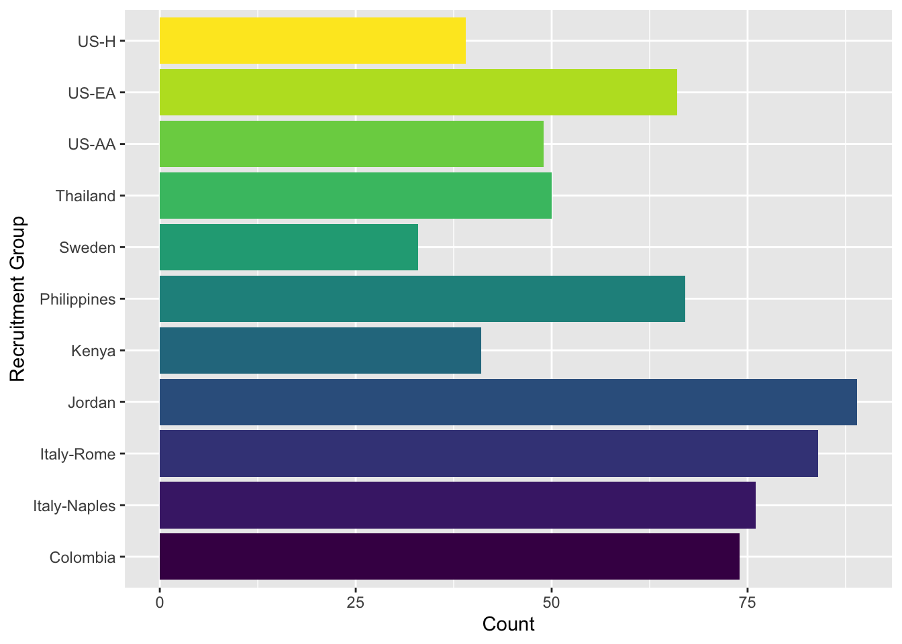
All fixed! The issue was that I had used the “length.out” command unnecessarily.
For the sake of space, I will just look at Time 2 civic engagement:
df_civicengagement %>%
ggplot(aes(x = JDM, y = CE_2)) +
geom_point() +
geom_smooth(method = "lm", se = FALSE, color = "navy") +
labs(x = 'Joint Decision Making',
y = 'Civic Engagement at Time 2')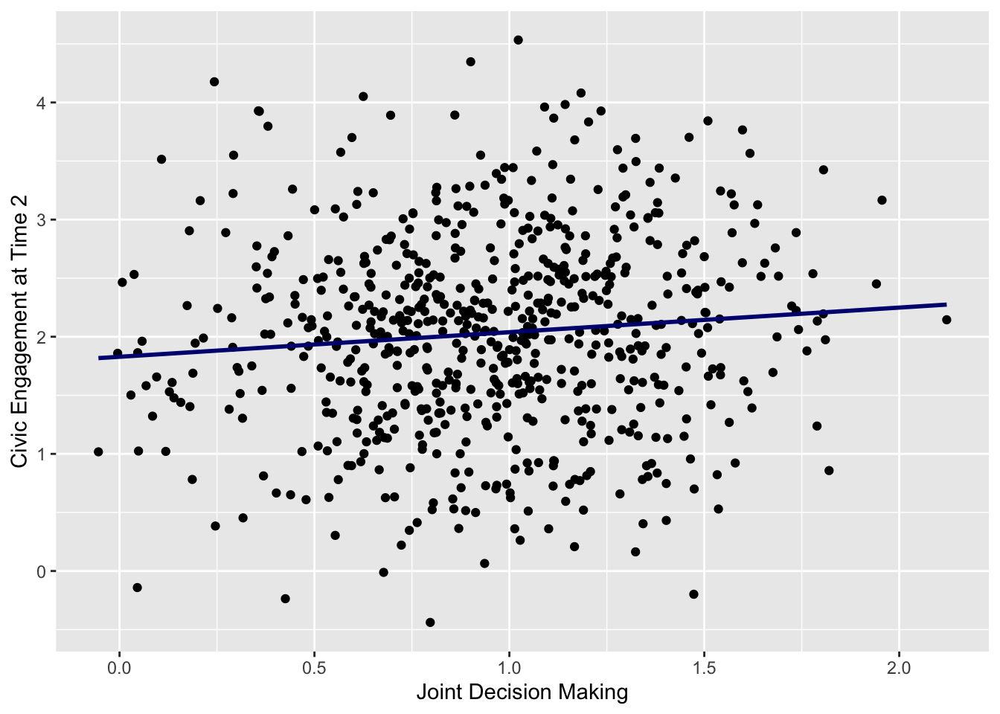
df_civicengagement %>%
ggplot(aes(x = IDM, y = CE_2)) +
geom_point() +
geom_smooth(method = "lm", se = FALSE, color = "navy") +
labs(x = 'Independent Decision Making',
y = 'Civic Engagement at Time 2')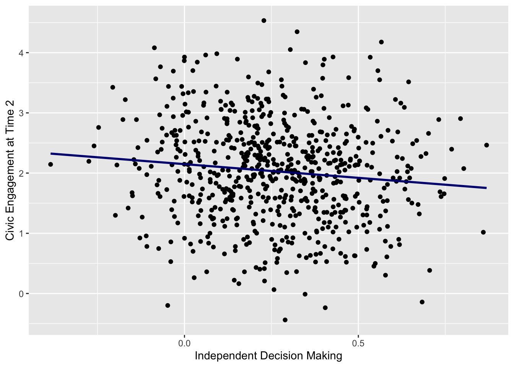
df_civicengagement %>%
ggplot(aes(x = MatWarmth, y = CE_2)) +
geom_point() +
geom_smooth(method = "lm", se = FALSE, color = "navy") +
labs(x = 'Maternal Warmth',
y = 'Civic Engagement at Time 2')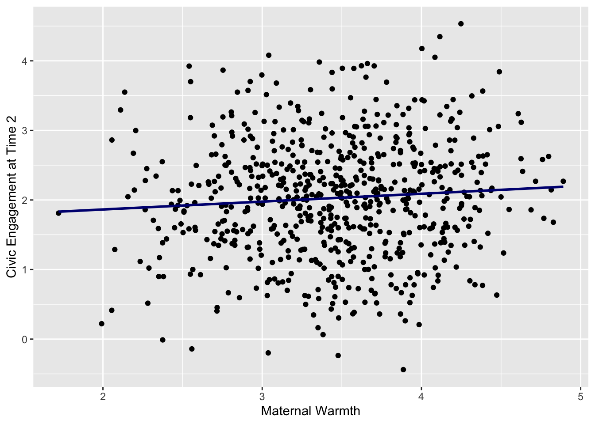
df_civicengagement %>%
ggplot(aes(x = PatWarmth, y = CE_2)) +
geom_point() +
geom_smooth(method = "lm", se = FALSE, color = "navy") +
labs(x = 'Paternal Warmth',
y = 'Civic Engagement at Time 2')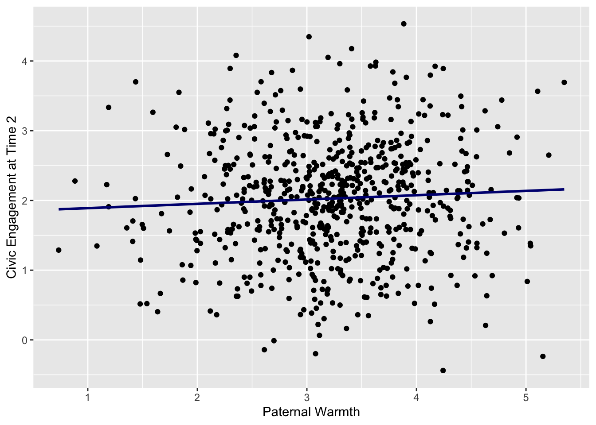
Seeing how the simulated correlations compare to the values I entered:
print(cor_matrix_parenting_CE)## JDM IDM MatWarmth PatWarmth CE_2 CE_3
## JDM 1.000 -0.802 0.129 0.172 0.086 0.103
## IDM -0.802 1.000 -0.148 -0.197 -0.129 -0.102
## MatWarmth 0.129 -0.148 1.000 0.551 0.056 -0.002
## PatWarmth 0.172 -0.197 0.551 1.000 0.046 0.044
## CE_2 0.086 -0.129 0.056 0.046 1.000 0.521
## CE_3 0.103 -0.102 -0.002 0.044 0.521 1.000cor(df_civicengagement[c("JDM", "IDM", "MatWarmth", "PatWarmth", "CE_2", "CE_3")])## JDM IDM MatWarmth PatWarmth CE_2
## JDM 1.00000000 -0.8013272 0.143892099 0.12733925 0.09549792
## IDM -0.80132720 1.0000000 -0.163969093 -0.16264651 -0.11263885
## MatWarmth 0.14389210 -0.1639691 1.000000000 0.55255185 0.07669875
## PatWarmth 0.12733925 -0.1626465 0.552551855 1.00000000 0.05602217
## CE_2 0.09549792 -0.1126388 0.076698746 0.05602217 1.00000000
## CE_3 0.12057998 -0.1147403 -0.002342452 0.07716920 0.49426811
## CE_3
## JDM 0.120579985
## IDM -0.114740294
## MatWarmth -0.002342452
## PatWarmth 0.077169200
## CE_2 0.494268113
## CE_3 1.000000000Everything looks good! I will save my simulated data for use in a future portfolio piece:
write.csv(df_civicengagement, "/Users/sophieboyd/Documents/GitHub/Portfolio/docs/civicengagement_sim.csv")One thing missing from my simulation is that I did not account for any differences between the recruitment groups. This is not a problem for the regressions that I want to run in my next portfolio piece (which use the whole sample without accounting for group differences). However, for part of my thesis, I examined group differences in civic engagement to see if trends in civic engagement corresponded to country-level income inequality. To account for this in my simulated data, I need to adjust my civic engagement variables to vary by group.
This would get kind of complicated with all 11 groups, so to simplify my second simulation, I will just include two groups. Because I was interested in examining civic engagement in countries with different levels of income inequality, I will use the country with the highest inequality (Colombia) and the country with the lowest inequality (Sweden) according to estimates from the World Inequality Database.
set.seed(123)
df_civicengagement <- data.frame(
id = 1:125,
age = rnorm(125, mean = 15.17, sd = .975)
)set.seed(123)
df_civicengagement$IDN <- rep(c("Sweden", "Colombia"), times = c(51, 74))df_civicengagement$male <- rep(c("not male", "male"), times = c(72, 53))df_civicengagement$max_parental_ed <- rnorm(125, mean = 12.67, sd = 5.02)First, I am recreating the core variables using the correlations again, with the values adjusted for my limited sample (means, standard deviations, and correlations across the two groups combined):
set.seed(123)
n_participants <- 125
var_names <- c("JDM", "IDM", "MatWarmth", "PatWarmth", "CE_2", "CE_3")
mean_vars <- c(.88, .33, 3.46, 3.24, 1.74, 1.57)
sd_vars <- c(.36, .21, .63, .81, .63, .62)
cor_matrix_parenting_CE <- matrix(
c(
1.0000, -.806, .126, .178, -.021, .116,
-.806, 1.0000, -.096, -.163, .000, -.059,
.126, -.096, 1.0000, .593, -.184, -.172,
.178, -.163, .593, 1.0000, -.299, -.155,
-.021, .000, -.184, -.299, 1.0000, .557,
.116, -.059, -.172, -.155, .557, 1.000
),
nrow = 6, ncol = 6, byrow = TRUE,
dimnames = list(
c("JDM", "IDM", "MatWarmth", "PatWarmth", "CE_2", "CE_3"),
c("JDM", "IDM", "MatWarmth", "PatWarmth", "CE_2", "CE_3")
)
)
cov_matrix_parenting_CE <- cor_matrix_parenting_CE * (sd_vars %*% t(sd_vars))
parenting_CE_data <- mvrnorm(n = 125, mu = mean_vars, Sigma = cov_matrix_parenting_CE)
df_civicengagement <- cbind(df_civicengagement, parenting_CE_data)Now, I need to create variation among the groups. I am mainly interested in how levels of civic engagement differ across countries with different levels of socioeconomic inequality, so I will focus on varying the two measures of civic engagement (reports at Time 2 and Time 3).
I am setting the means in rnorm to be the amount above/below the overall sample mean that I want to shift the mean for each group. Civic engagement was lower in Sweden and higher in Colombia.
set.seed(123)
df_civicengagement <- df_civicengagement %>%
mutate(CE_2 = case_when(
IDN == "Sweden" ~ CE_2 + rnorm(125, mean = -.22, sd = .01),
IDN == "Colombia" ~ CE_2 + rnorm(125, mean = .16, sd = .01),
))
df_civicengagement <- df_civicengagement %>%
mutate(CE_3 = case_when(
IDN == "Sweden" ~ CE_3 + rnorm(125, mean = -.19, sd = .01),
IDN == "Colombia" ~ CE_3 + rnorm(125, mean = .14, sd = .01),
))Now I will check the means to see if the simulation matches up with my data. I am expecting to see group differences in mean levels of civic engagement at Times 2 and 3, but no group differences in the other variables.
#df_civicengagement %>%
# select(IDN, JDM, IDM, MatWarmth, PatWarmth, CE_2, CE_3) %>%
# group_by(IDN) %>%
# summarize(across(everything(), list(mean = mean)))
# Getting an error here, I think because of the MASS package. Pulling code from the lab to try to resolve the issue:
library(conflicted)
conflicts_prefer(dplyr::select())## [conflicted] Will prefer dplyr::select over any other package.core_var_means <- df_civicengagement %>%
select(IDN, JDM, IDM, MatWarmth, PatWarmth, CE_2, CE_3) %>%
group_by(IDN) %>%
summarize(across(everything(), list(mean = mean)))
# All better!core_var_means %>%
ggplot(aes(x = IDN, y = JDM_mean, fill = IDN)) +
geom_col() +
labs(x = 'Recruitment Group',
y = 'Joint Decision Making') +
theme(legend.position="none") +
scale_fill_viridis_d() 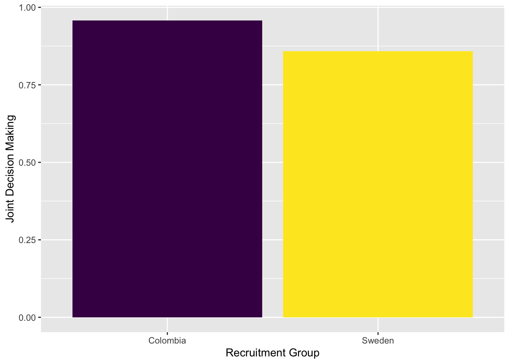
core_var_means %>%
ggplot(aes(x = IDN, y = IDM_mean, fill = IDN)) +
geom_col() +
labs(x = 'Recruitment Group',
y = 'Independent Decision Making') +
theme(legend.position="none") +
scale_fill_viridis_d() 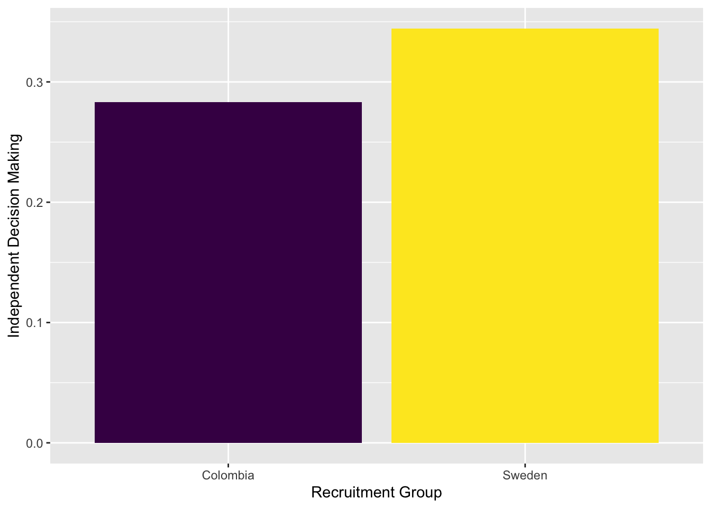
core_var_means %>%
ggplot(aes(x = IDN, y = MatWarmth_mean, fill = IDN)) +
geom_col() +
labs(x = 'Recruitment Group',
y = 'Maternal Warmth') +
theme(legend.position="none") +
scale_fill_viridis_d() 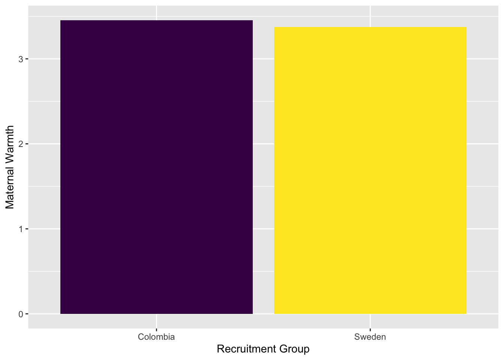
core_var_means %>%
ggplot(aes(x = IDN, y = PatWarmth_mean, fill = IDN)) +
geom_col() +
labs(x = 'Recruitment Group',
y = 'Paternal Warmth') +
theme(legend.position="none") +
scale_fill_viridis_d() 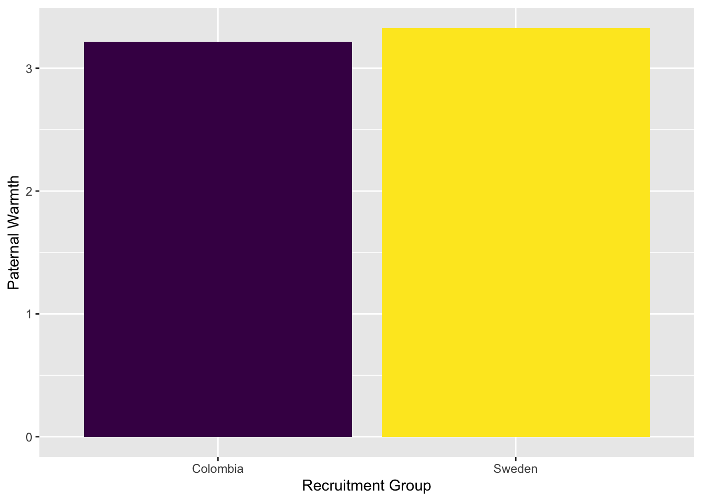
core_var_means %>%
ggplot(aes(x = IDN, y = CE_2_mean, fill = IDN)) +
geom_col() +
labs(x = 'Recruitment Group',
y = 'Time 2 Civic Engagement') +
theme(legend.position="none") +
scale_fill_viridis_d() 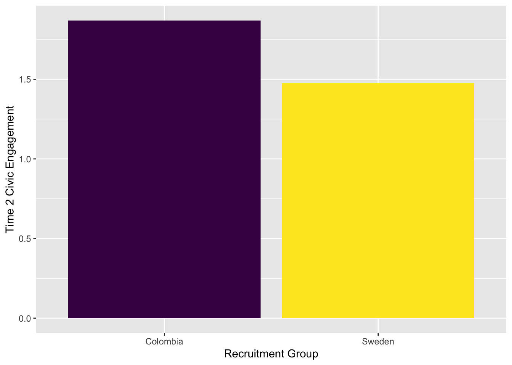
core_var_means %>%
ggplot(aes(x = IDN, y = CE_3_mean, fill = IDN)) +
geom_col() +
labs(x = 'Recruitment Group',
y = 'Time 3 Civic Engagement') +
theme(legend.position="none") +
scale_fill_viridis_d() 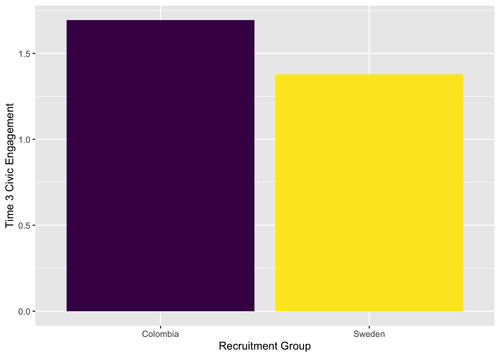